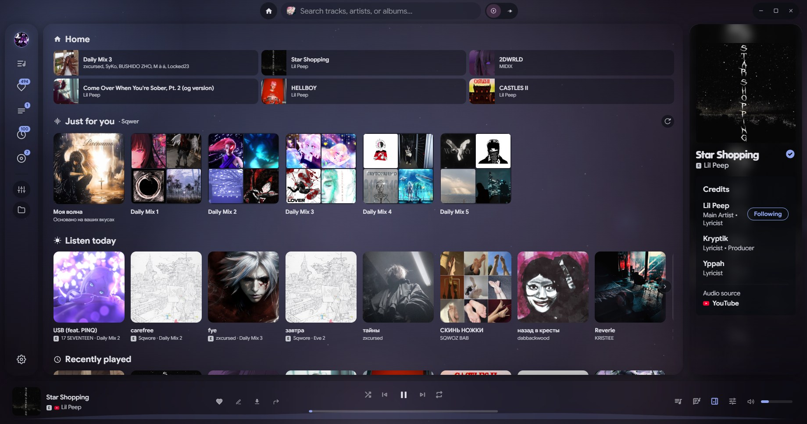

Источники
Вся музыка — в одном поиске
YouTube, YouTube Music, SoundCloud, Deezer, Apple Music и локальные файлы. Переключай источник, не меняя плеер.
Noctra — независимый музыкальный плеер и аудио-сьют. YouTube, YouTube Music, SoundCloud, Deezer, Apple Music и локальные файлы — в одном красивом окне. Без подписки, рекламы и облачной привязки.

Noctra соединяет источники, библиотеку, тексты, инструменты и прогресс — так, чтобы музыка была на первом месте, а интерфейс не мешал.
YouTube, YouTube Music, SoundCloud, Deezer, Apple Music и локальные файлы. Переключай источник, не меняя плеер.
Плейлисты, очередь, избранное, история, альбомы и артисты — в одной структуре.
Синхронизированные LRC, перевод, полноэкранный режим и караоке.
XP, ранги, достижения, ежедневные задания и статистика прослушивания.
Эквалайзер, обрезка, темп, тональность, реверберация и эффекты перегрузки.
Без телеметрии и рекламы. Библиотека, история и настройки хранятся на устройстве.
честно и без облакаПоказывай трек в Discord, скроббли Last.fm и подключай свою библиотеку YouTube.
Музыка, тексты, статистика и профиль выглядят как единое пространство. Нажми на снимок, чтобы рассмотреть.
Установи Noctra для Windows или Android. Без аккаунта, подписки и рекламы.
Выбери источник, импортируй плейлист или добавь локальные файлы.
Открывай новое, собирай коллекции и смотри, как растёт твой профиль.
Noctra считает прогресс локально по твоей истории. Это персональная система, а не социальная сеть.
Инструменты для тех, кто слышит детали: от быстрой настройки эквалайзера до обрезки и эффектов.
Настрой частоты под свои наушники или комнату. Готовые профили и ручная тонкая настройка.
Обрежь трек, измени темп или тональность, добавь реверберацию и перегрузку.
Скачивай треки и собирай локальную медиатеку. Слушай без интернета и без ограничений.
Выбери оттенок интерфейса. Он сразу изменится на сайте и сохранится для следующего визита.
Фокус на треке или фокус на открытиях. Переключайся между карусельной главной и Home в стиле стриминга.
Большая обложка, плавное перелистывание, случайный артист и минимум лишнего вокруг.
Полки «Только для тебя», «Послушай сегодня», недавние треки и любимые артисты.
Noctra не собирает телеметрию и не требует облачного аккаунта. История, настройки и библиотека хранятся на устройстве.
Профиль, новая главная, живой фон, темы, эффекты баннера и инструменты разработчика.
Подписанные Windows-сборки через SignPath, стабильные автообновления и больше источников.
Мобильный Noctra доступен в бете: плеер, профиль, достижения и эффекты. Дальше — стабильная подпись, обновления и новые источники.
Одна кнопка. Без аккаунта, подписки и рекламы.
Установщик Noctra. При первом запуске приложение предложит загрузить yt-dlp и ffmpeg для воспроизведения и скачивания.
Скачать для WindowsУстановщик · x64Готовой сборки в релизе пока нет. Приложение работает на Linux — можно собрать из исходников.
Собрать из исходниковСборка для macOS экспериментальная и требует дополнительной подписи. Пока можно собрать из исходников.
Собрать из исходниковПоследняя сборка Noctra для Android: плеер, профиль, XP, достижения, эффекты и синхронизация через Google Drive. APK подписан debug-ключом — разрешите установку из неизвестных источников.
Скачать APKAndroid 7+ · 13 МБ · latest betaДа. Noctra распространяется по лицензии MIT. Нет подписок, платных тарифов и рекламы.
Для прослушивания и импорта публичных плейлистов аккаунт не нужен. Вход Google опционален и нужен только для доступа к своим плейлистам и лайкам YouTube.
Это Smart App Control: он блокирует новые сборки без доверенной подписи. Noctra 0.1.0 пока не подписана. Можно выключить Smart App Control в Параметрах Windows (это снижает защиту системы) или дождаться подписанного релиза. SmartScreen с кнопкой «Выполнить в любом случае» — другое предупреждение, его можно обойти через «Подробнее».
Для потокового воспроизведения и скачивания Noctra использует yt-dlp и ffmpeg. Приложение помогает загрузить их при первом запуске. Если GitHub недоступен, положите yt-dlp.exe, ffmpeg.exe и ffprobe.exe в %LOCALAPPDATA%\Noctra\bin вручную.
На устройстве: на Windows — в %APPDATA%\Noctra и %LOCALAPPDATA%\Noctra. Noctra не отправляет библиотеку и историю разработчику. Резервную копию можно создать в настройках.
Noctra — независимый проект на базе открытого кода Riff (MIT). Он не связан с авторами Riff и музыкальными сервисами. Атрибуция и юридическая информация — в файлах LICENSE и NOTICE.
Уже есть. Свежая beta Noctra для Android 7+ доступна на странице релиза: скачайте APK и разрешите установку из неизвестных источников. В сборке есть синхронизация через Google Drive.
Установленная Windows-версия умеет проверять обновления на GitHub Releases. Portable-копию и сборки для других платформ обновляйте вручную со страницы релизов.
Noctra — независимый проект на базе открытого кода Riff (MIT). Спасибо авторам Riff за фундамент. Noctra не связан с Riff и музыкальными сервисами.
Баги, идеи и пожелания — в issue-трекере. Для крупных изменений лучше сначала обсудить предложение.